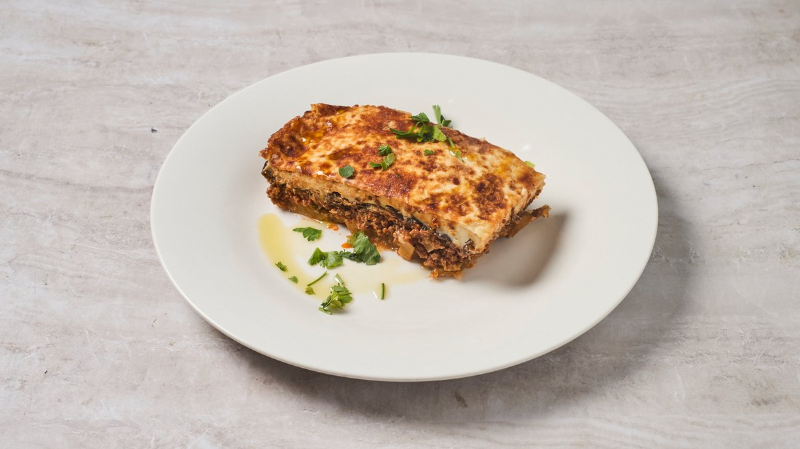

Ο καλύτερος μουσακάς στην Αθήνα
είναι μυστικό της γειτονιάς στο Κουκάκι.
Ο Παραδοσιακός Μουσακάς του Cookaki (€9,90) είναι σιγοψημένη μελιτζάνα, μοσχαρίσιος κιμάς που τον αλέθουμε μόνοι μας και σιγοβράζει σε ντομάτα και κανέλα, και αέρινη μπεσαμέλ φτιαγμένη φρέσκια κάθε πρωί — ψημένος στην ίδια κουζίνα του Κουκακίου από το 1956, πέντε λεπτά από το Μουσείο Ακρόπολης.

Στρωμένος με υπομονή, από τη δεκαετία του ’70
Ο μουσακάς είναι το μεγάλο ψητό κλασικό της Ελλάδας: στρώσεις μελιτζάνας και κιμά κάτω από ένα πάπλωμα μπεσαμέλ. Ο δικός μας δεν έχει αλλάξει εδώ και δεκαετίες — κι εκεί ακριβώς είναι η ουσία.
- Μελιτζάνα — σε φέτες και σιγοψημένη, ποτέ τηγανισμένη σε σπορέλαια
- Μοσχάρι — αλεσμένο επιτόπου στη δική μας μηχανή, ώστε να ελέγχουμε τη συνταγή
- Σάλτσα ντομάτας & κανέλας — σιγοβρασμένη, στον αθηναϊκό τρόπο
- Μπεσαμέλ — φτιαγμένη από την αρχή κάθε πρωί, ελαφριά και όχι βαριά
- Ελληνικό εξαιρετικό παρθένο ελαιόλαδο — το λίπος που μαγειρεύουμε, από την αρχή ως το τέλος
€9,90 · ~520 kcal · ένα πραγματικά χορταστικό πιάτο, πλούσιο σε πρωτεΐνη.
Έντιμος μουσακάς, όχι ταψί για τουρίστες.
Ψητός, όχι τηγανητός
Ψήνουμε τη μελιτζάνα αντί να την τηγανίζουμε σε βιομηχανικό λάδι — πιο ελαφρύ στο πιάτο, και γεύεσαι το λαχανικό, όχι το τηγάνι.
Κιμάς που αλέθουμε μόνοι μας
Το μοσχάρι αλέθεται στη δική μας μηχανή κάθε μέρα, ώστε να ξέρουμε ακριβώς τι υπάρχει μέσα. Χωρίς μυστήριο κιμά, χωρίς γεμιστικά.
Πέντε λεπτά από το μουσείο
Μια πραγματική τιμή γειτονιάς (€9,90) δύο τετράγωνα από το Μουσείο Ακρόπολης — εκεί που ένα τόσο έντιμο πιάτο δύσκολα βρίσκεις.
Τι λένε οι ταξιδιώτες μετά την πρώτη μπουκιά
Οι επισκέπτες μας λένε συνέχεια το ίδιο: ότι έχει τη γεύση της κουζίνας μιας Ελληνίδας γιαγιάς, όχι ενός μενού φτιαγμένου για τα τουριστικά πούλμαν. Το Cookaki έχει 4,8 ★ σε 448 κριτικές Google και 4,9 ★ στο Tripadvisor. Συνοδέψτε τον μουσακά με μια χωριάτικη σαλάτα και ένα ποτήρι από το οργανικό κρασί μας, και κλείστε με το San Sebastián burnt cheesecake.
Ο μουσακάς, με απαντήσεις
Πού θα βρω τον καλύτερο μουσακά στην Αθήνα;
Από τι φτιάχνεται ο ελληνικός μουσακάς;
Πόσο κοστίζει;
Υπάρχει χορτοφαγική εκδοχή;
Μπορώ να πάρω μουσακά για delivery ή takeaway;
Δοκιμάστε τον μουσακά που φέρνει τους ντόπιους πίσω.
Κλείστε τραπέζι ή παραγγείλτε τον κατευθείαν στο ξενοδοχείο σας κοντά στην Ακρόπολη.